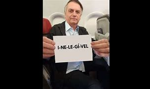

BOLSONARO INELEGÍVEL: Carlos Bolsonaro critica Moro por silêncio após Jair Bolsonaro ficar inelegível

Da Agência Estado
O vereador Carlos Bolsonaro (Republicanos-RJ) reforçou uma crítica ao senador Sérgio Moro (União Brasil-PR) por seu silêncio sobre o julgamento do Tribunal Superior Eleitoral (TSE) que determinou a inelegibilidade do ex-presidente Jair Bolsonaro (PL) por oito anos. A votação da Corte eleitoral ocorreu na sexta-feira, 30 de junho, e até este domingo, 2, o ex-ministro da Justiça de Bolsonaro não se manifestou.
No sábado, 1º, uma usuária do Twitter postou uma foto de Moro conversando com o ministro Alexandre de Moraes, presidente do TSE, e questionou: "Alguma manifestação do Moro em relação a inelegibilidade de Bolsonaro?". Carlos, filho "02" do ex-presidente, respondeu à postagem com uma crítica de baixo calão. "A terceira via tá chamuscando a beirola!", publicou.
Moro era tido como um possível candidato da chamada "terceira via" nas eleições de 2022, mas abandonou sua candidatura depois de trocar de partido, saindo do Podemos e entrando no União Brasil, pelo qual se elegeu senador pelo Paraná.O ex-juiz, responsável por conduzir a ação penal que levou à condenação de Luiz Inácio Lula da Silva (PT) pela Lava Jato, em 2018, teve um relacionamento conturbado com Bolsonaro. Com a posse do ex-presidente, eleito depois da inelegibilidade de Lula em 2018, Moro foi convidado para assumir o Ministério da Justiça do novo governo. Cargo que ocupou até pedir demissão em abril de 2020, acusando Bolsonaro de interferir na Polícia Federal.